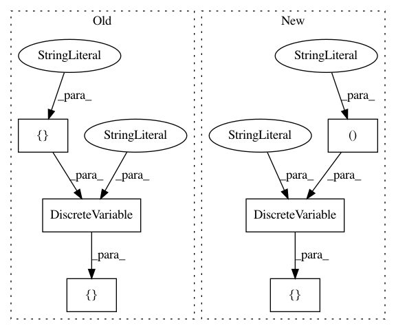

3e91b86e41cdff284f3fe337096d71a228c4aad3,Orange/tests/test_discretize.py,TestEntropyMDL,test_entropy_constant,#TestEntropyMDL#,98
Before Change
def test_entropy_constant(self):
X = np.zeros((100, 1))
domain = Domain([ContinuousVariable("v1")],
[DiscreteVariable("c1", values=["1"])])
table = data.Table(domain, X, X)
disc = discretize.EntropyMDL()
dvar = disc(table, table.domain[0])
After Change
def test_entropy_constant(self):
X = np.zeros((100, 1))
domain = Domain([ContinuousVariable("v1")],
[DiscreteVariable("c1", values=("1",))])
table = data.Table(domain, X, X)
disc = discretize.EntropyMDL()
dvar = disc(table, table.domain[0])
In pattern: SUPERPATTERN
Frequency: 4
Non-data size: 6
Instances
Project Name: biolab/orange3
Commit Name: 3e91b86e41cdff284f3fe337096d71a228c4aad3
Time: 2020-02-28
Author: janez.demsar@fri.uni-lj.si
File Name: Orange/tests/test_discretize.py
Class Name: TestEntropyMDL
Method Name: test_entropy_constant
Project Name: biolab/orange3
Commit Name: 3e91b86e41cdff284f3fe337096d71a228c4aad3
Time: 2020-02-28
Author: janez.demsar@fri.uni-lj.si
File Name: Orange/widgets/unsupervised/tests/test_owcorrespondence.py
Class Name: TestOWCorrespondence
Method Name: test_data_one_value_zero
Project Name: biolab/orange3
Commit Name: 3e91b86e41cdff284f3fe337096d71a228c4aad3
Time: 2020-02-28
Author: janez.demsar@fri.uni-lj.si
File Name: Orange/widgets/unsupervised/tests/test_owhierarchicalclustering.py
Class Name: TestOWHierarchicalClustering
Method Name: test_infinite_distances
Project Name: biolab/orange3
Commit Name: 3e91b86e41cdff284f3fe337096d71a228c4aad3
Time: 2020-02-28
Author: janez.demsar@fri.uni-lj.si
File Name: Orange/tests/test_domain.py
Class Name: TestDomainInit
Method Name: test_domain_conversion_sparsity